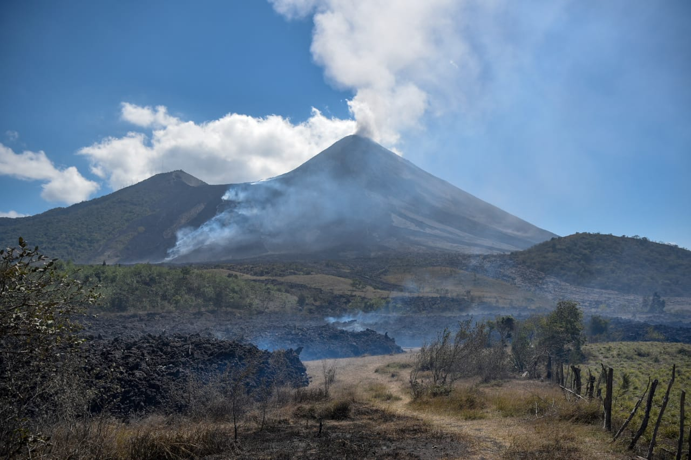

Inicio
Zonas Turismo
Zonas Turisticas de Guatemala
Parque Nacional Tikal
Lago Atitlán
Arco de Santa Catalina
Mercado de Chichicastenango
Monterrico
Yaxhá
Volcán Pacaya

Parque Central de Quetzaltenango
El Mirador